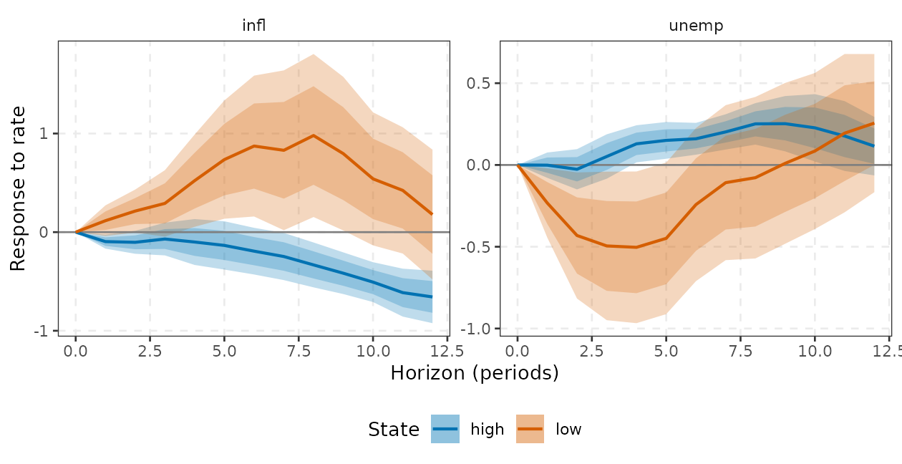
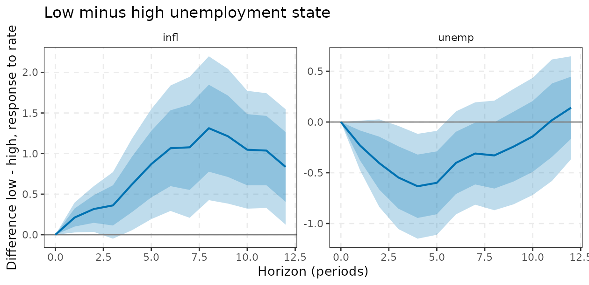
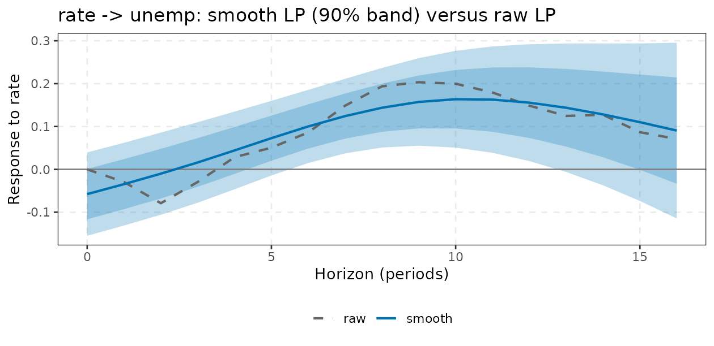
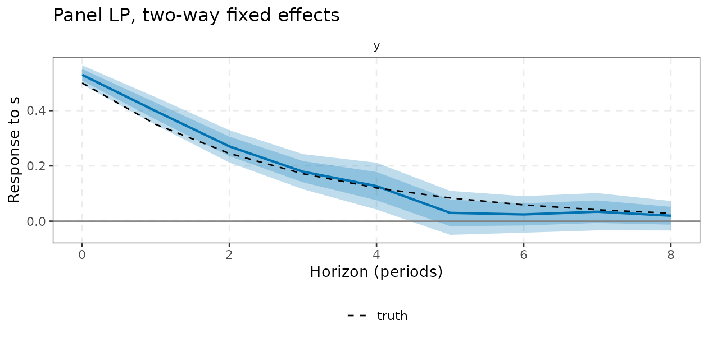
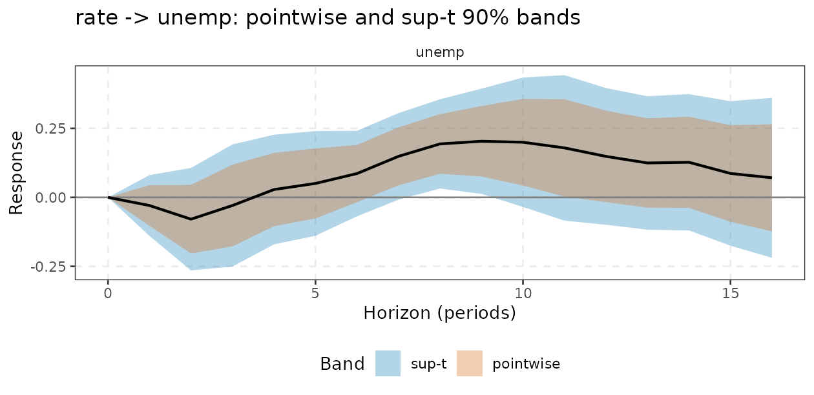
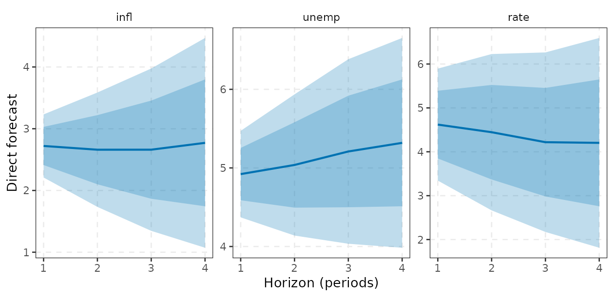

Advanced local projections: state dependence, smoothing, panels, joint inference and forecasting
Source:vignettes/lp-advanced.Rmd
lp-advanced.RmdThis vignette covers the extensions built on top of
lp(), which is defined in
vignette("local-projections"): state-dependent LP
(lp_state()), smooth LP (lp_smooth()), panel
LP (lp_panel()), joint cross-horizon inference with sup-t
bands (lp_joint(), lp_supt()) and direct
forecasts (lp_forecast()). Every result has
tidy() and autoplot() methods:
autoplot() returns an ordinary ggplot (add
layers with +) and tidy() returns a tibble
with the columns horizon, response,
estimate, std.error, level,
conf.low, conf.high (plus state
for lp_state()), ready for ggplot2 or dplyr. Variables are
named with tidyselect syntax. Each section gives a definition, the
intuition, an example and the pitfalls. Where a claim rests on
simulation we run a small version of the simulation in the vignette and
say what it does and does not show.
1. State-dependent LP: lp_state()
Definition
Let be a switching variable (the state), standardised to . Auerbach and Gorodnichenko (2012, 2013) let every coefficient of the LP depend on the state at through a transition function : Two transitions are available:
-
transition = "logistic": with smoothnessgammaand cutoffcutoff(orlow_share). when is well below , so “low” is the state in which the switching variable is low; -
transition = "binary": .
The response is
in the low state and
in the high state. The function estimates both in one regression per
horizon (C++ engine), reports
(diff = low - high) with a HAC
-test
at each horizon and a joint Wald test over horizons.
Calibration.
and
are not estimated. Auerbach and Gorodnichenko use
and a cutoff such that the low state has roughly 20% weight;
low_share = 0.2 sets
to that quantile. hp_lambda = 1600 replaces the raw state
by its Hodrick-Prescott cycle (quarterly data).
Timing. The state enters lagged one period, , so that the shock cannot move the state it is being interacted with within the same period. This matches Auerbach and Gorodnichenko; it is a convention, and a state that responds to the shock with a lag still contaminates the comparison at longer horizons.
Intuition
Fiscal and monetary effects are often thought to differ across the cycle. A nonlinear VAR would impose how the state evolves; the LP lets the response at each horizon be state-specific and does not model state transitions, so the state may change over the horizon. The price is variance: each state uses only the observations weighted by or .
Example
We ask whether the response to a one-point rate rise differs when unemployment is low or high, using a smooth transition with 30% of the weight in the low-unemployment state:
st <- lp_state(yraw, rate, unemp, horizon = 12, lags = 2, contemp = c(infl, unemp),
gamma = 3, low_share = 0.3, responses = c(infl, unemp))
st
#> <lp_state> contemporaneous timing, logistic transition, shock 'rate', horizons 0..12; low-state share 0.29
#> Joint test of equal responses across states (Wald):
#> stat df p
#> infl 57.775 12 0.000
#> unemp 20.513 12 0.058
glance(st) # includes the cutoff and share_low
#> # A tibble: 1 × 9
#> shock horizon lags timing transition cutoff share_low nobs wald_p
#> <chr> <int> <int> <chr> <chr> <dbl> <dbl> <dbl> <dbl>
#> 1 rate 12 2 contemporaneous logistic -0.503 0.294 213 5.73e-8
h <- c(2, 5, 9, 13) # rows for horizons 1, 4, 8, 12
round(cbind(low = st$estimate[h, "infl", "low"], high = st$estimate[h, "infl", "high"],
diff = st$estimate[h, "infl", "diff"], p = st$pvalue[h, "infl"]), 3)
#> low high diff p
#> 1 0.116 -0.096 0.212 0.058
#> 4 0.522 -0.100 0.622 0.070
#> 8 0.980 -0.332 1.312 0.015
#> 12 0.178 -0.657 0.835 0.053
autoplot(st) # low and high state overlaid
The difference between the two states, with its own bands, is
autoplot(st, type = "diff"):

The first panel of the plot (inflation) shows the “low unemployment” response well above the “high unemployment” one at medium horizons, and the Wald test rejects equality for inflation at conventional levels. For unemployment the joint test is borderline. These are descriptive findings from one sample, not evidence of a causal asymmetry: the state is calibrated, the rate is identified only by the recursive ordering, and the effective sample in the low state is small.
The calibration matters. The same specification with different smoothness and low-state shares gives joint Wald -values for unemployment that range widely:
pv <- sapply(c(0.2, 0.5), function(q) sapply(c(1.5, 3, 10), function(g)
lp_state(yraw, rate, unemp, 8, lags = 2, contemp = c(infl, unemp), gamma = g, low_share = q,
responses = unemp)$wald[1, "p"]))
dimnames(pv) <- list(gamma = c(1.5, 3, 10), low_share = c(0.2, 0.5))
round(pv, 3)
#> low_share
#> gamma 0.2 0.5
#> 1.5 0.274 0.119
#> 3 0.510 0.112
#> 10 0.403 0.026A conclusion that flips between “reject” and “do not reject” across reasonable calibrations should be reported as such.
Convention check against lpirfs::lp_nl
With timing = "lagged" the function replicates the
convention of lpirfs::lp_nl(): the regressors are lags of
interacted with the state, no contemporaneous terms, and the
horizon-
response is the coefficient on
in the equation for
multiplied by a column of the Cholesky impact matrix of a linear VAR
(standard-deviation shock for shock_type = 0). The impact
response
()
is that column in both states. Bands here are normal quantiles at
level, whereas lpirfs uses a user multiplier
on the coefficient-wise standard errors, and lpirfs uses a
common constant, so set state_const = FALSE to compare.
zz <- as.numeric(scale(yraw$unemp))
ref <- lpirfs::lp_nl(as.data.frame(yraw), lags_endog_lin = 2, lags_endog_nl = 2, trend = 0,
shock_type = 0, confint = 1, hor = 8, switching = zz, use_hp = 0,
lambda = 1600, gamma = 3, use_nw = TRUE, num_cores = 1)
me <- lp_state(yraw, shock = rate, state = unemp, horizon = 8, lags = 2, timing = "lagged",
lags_lin = 2, shock_type = 0, gamma = 3, state_const = FALSE)
# lpirfs state 1 = high, state 2 = low (F -> 1 in the low state)
c(high = max(abs(me$estimate[, , "high"] - t(ref$irf_s1_mean[, , 3]))),
low = max(abs(me$estimate[, , "low"] - t(ref$irf_s2_mean[, , 3]))))
#> high low
#> 1.213196e-13 1.543765e-13The point estimates agree to numerical precision. The
"contemporaneous" default is a different (shock-regression)
specification: do not compare its numbers with lp_nl
directly.
Pitfalls
- and are calibrated, not estimated. Report sensitivity (above).
- With
transition = "binary"one regime may have few observations; checkshare_low. - The difference test has low power at long horizons with persistent states.
- The state must be (close to) exogenous to the shock beyond one lag.
- Not all options of
lpirfs::lp_nlcarry over; see the comparison above.
2. Smooth LP: lp_smooth()
Definition
Raw LP estimates are noisy and jagged because each horizon is a
separate regression. Barnichon and Brownlees (2019) impose that the
response is a smooth function of the horizon,
with a B-spline basis (nbasis, default
;
cubic by default) and estimate all horizons jointly by penalised least
squares:
where tildes denote residuals from the
horizon-specific regression on the controls (Frisch-Waugh) and
is the
-th
order difference matrix (Eilers and Marx’s P-spline penalty,
penalty_order = 2). As
the response tends to a polynomial of degree
.
The penalty
is chosen by
-fold
cross-validation over contiguous blocks of time
(nfolds), so serial dependence is not broken by random
splits. Standard errors use the HAC sandwich
with Newey-West truncation H + 1 on the scores summed over
horizons.
Intuition
Theory suggests responses are smooth. Pooling neighbouring horizons
trades a small bias for a large variance reduction, which places smooth
LP between unrestricted LP and a parametric VAR in the bias-variance
trade-off of vignette("local-projections").
Example
sm <- lp_smooth(yraw, shock = rate, response = unemp, horizon = 16, lags = 2, contemp = c(infl, unemp))
c(lambda = sm$lambda, edf = sm$edf)
#> lambda edf
#> 106.623109 3.271681
round(cbind(smooth = sm$estimate[, 1], raw = sm$lp, se_smooth = sm$se[, 1], se_raw = sm$lp_se)[c(2, 5, 9, 13, 17), ], 3)
#> smooth raw se_smooth se_raw
#> 1 -0.035 -0.030 0.059 0.045
#> 4 0.044 0.028 0.055 0.081
#> 8 0.144 0.194 0.056 0.066
#> 12 0.156 0.149 0.083 0.101
#> 16 0.091 0.071 0.125 0.118
The CV choice of
is stored in sm$cv (a grid of 21 values scaled by
,
from
to
);
a CV curve that is flat or minimised at an edge of the grid is a warning
to supply lambda and nbasis yourself.
Monte Carlo evidence
A VAR(1) with and a recursive identification; we compare the mean squared error of the response path of to a unit impulse in , for raw and smooth LP, and the pointwise coverage of the nominal 90% band (100 replications, so figures carry Monte Carlo error of a few percentage points on coverage).
A <- matrix(c(0.6, 0.2, 0, 0.5), 2, 2); Pc <- t(chol(matrix(c(1, .3, .3, 1), 2)))
Ht <- 12
truth <- sapply(0:Ht, function(h) { M <- diag(2); for (i in seq_len(h)) M <- A %*% M; (M %*% Pc[, 1] / Pc[1, 1])[2] })
sim2 <- function(n = 250, burn = 50) {
e <- matrix(rnorm(2 * n), n) %*% t(Pc); Y <- matrix(0, n, 2)
for (t in 2:n) Y[t, ] <- A %*% Y[t - 1, ] + e[t, ]
Y <- Y[-seq_len(burn), ]; colnames(Y) <- c("x", "y"); Y
}
R <- 100; out <- matrix(0, R, 4, dimnames = list(NULL, c("mse_raw", "mse_smooth", "cov_raw", "cov_smooth")))
for (r in seq_len(R)) {
Y <- sim2()
f <- lp(Y, x, Ht, lags = 2, responses = y); s <- lp_smooth(Y, x, y, Ht, lags = 2)
out[r, ] <- c(mean((f$estimate[, 1] - truth)^2), mean((s$estimate[, 1] - truth)^2),
mean(truth >= f$bands[, 1, 1] & truth <= f$bands[, 1, 4]),
mean(truth >= s$bands[, 1, 1] & truth <= s$bands[, 1, 4]))
}
m <- colMeans(out)
round(c(m, mse_ratio = unname(m["mse_smooth"] / m["mse_raw"])), 3)
#> mse_raw mse_smooth cov_raw cov_smooth mse_ratio
#> 0.008 0.005 0.872 0.772 0.651Smoothing reduces the mean squared error of the response path to roughly two thirds of the raw LP’s (a ratio of about 0.65 to 0.67 in this run and in larger ones). The coverage columns show the limitation: the smooth LP’s pointwise bands cover less than the raw LP’s. They are conditional on the selected and ignore both the smoothing bias and the uncertainty from choosing by cross-validation. Use smooth LP for point estimates and shape, and treat its bands as optimistic.
Pitfalls
- Sharp features (an impact jump, a sudden reversal) are smoothed away; the horizon-0 value is part of the smooth curve, not pinned at its known value.
- One response at a time (
response);cumulative = TRUEcumulates the response. - Bands ignore the selection of
(see above).
sm$vcovis compatible withlp_supt(), with the same caveat. - The default basis has at most 8 functions; with a long horizon
increase
nbasis.
3. Panel LP: lp_panel()
Definition
For a panel
and each horizon,
fe chooses unit effects
,
time effects
,
both ("twoway", default) or none. Estimation is by within
transformation (alternating projections for unbalanced two-way panels,
so no dummy matrix is built) and standard errors cluster on the unit
(cluster = "unit") or on time, with the Stata-type
small-sample factor
,
counting the regressors and the absorbed effects. Clustering is what
allows for the
MA()
serial correlation of the residuals within a unit. The cross-horizon
cluster covariance is returned in $vcov for
lp_supt().
Intuition
Panels provide identification and power. Unit effects remove time-invariant heterogeneity; time effects remove shocks common to all units, so is identified from cross-sectional differences in exposure to . The cost is interpretation: with time effects the estimate is a relative effect (units with more of the shock versus fewer) and the aggregate effect is absorbed.
Example: a simulated panel
Forty units, 50 periods. The shock has a unit-specific mean and a common component, and the outcome has unit effects and a common time shock, so pooled OLS is biased. The true response is .
set.seed(5); N <- 40; Tn <- 50
ft <- rnorm(Tn); mu <- rnorm(N) # common time shock; unit effects
d <- expand.grid(t = 1:Tn, id = 1:N)
d$s <- 0.5 * mu[d$id] + 0.5 * ft[d$t] + rnorm(nrow(d))
d$y <- 0
for (i in 1:N) {
ix <- which(d$id == i); yy <- 0
for (k in seq_along(ix)) { yy <- 0.7 * yy + 0.5 * d$s[ix[k]] + mu[i] + ft[k] + rnorm(1); d$y[ix[k]] <- yy }
}
hs <- c(0, 2, 4, 8)
res <- sapply(c(none = "none", unit = "unit", time = "time", twoway = "twoway"),
function(f) lp_panel(d, y, s, id, t, horizon = 8, lags = 1, fe = f)$estimate[hs + 1])
round(cbind(res, truth = 0.5 * 0.7^hs), 3)
#> none unit time twoway truth
#> [1,] 1.007 0.949 0.603 0.529 0.500
#> [2,] 0.841 0.581 0.472 0.271 0.245
#> [3,] 0.515 0.141 0.406 0.127 0.120
#> [4,] 0.403 0.057 0.336 0.020 0.029Only the two-way specification recovers the truth; omitting either effect leaves bias at every horizon. Now the two-way fit with its bands:
pn <- lp_panel(d, y, s, id, t, horizon = 8, lags = 1)
pn$nclusters[1]
#> [1] 40
round(cbind(estimate = pn$estimate[, 1], se = pn$se[, 1], truth = 0.5 * 0.7^(0:8))[c(1, 3, 5, 9), ], 3)
#> estimate se truth
#> 0 0.529 0.021 0.500
#> 2 0.271 0.036 0.245
#> 4 0.127 0.051 0.120
#> 8 0.020 0.032 0.029
autoplot(pn) +
geom_line(aes(y = truth, linetype = "truth"), data = data.frame(horizon = 0:8, truth = 0.5 * 0.7^(0:8))) +
scale_linetype_manual(values = "dashed", name = NULL) +
labs(title = "Panel LP, two-way fixed effects")
The estimates are within about one standard error of the truth at the horizons shown. Note the small shortfall at : with unit effects and lagged outcomes among the controls the within transformation brings in a small- (Nickell-type) bias of order times the cumulated response, which is why the pitfall below recommends long panels.
Pitfalls
- Fixed effects with lagged dependent variables give Nickell bias when
is small; use long panels or drop the
ylags. - With few clusters (fewer than about 30) cluster-robust bands are too narrow.
- With time effects the estimate is relative; heterogeneous responses are averaged with variance weights.
-
timemust be regularly spaced; duplicated (unit, time) pairs are an error.
4. Joint inference and sup-t bands: lp_joint(),
lp_supt()
Definition
LP estimates at neighbouring horizons are built from overlapping data
and are strongly correlated, so a pointwise band says little about the
whole path. lp_joint() runs the same regressions as
lp() and in addition returns, for each response, the
covariance matrix of
:
with
or a common nw_lag. Its diagonal reproduces the standard
errors of lp(). lp_supt() then builds the
sup-t band of Montiel Olea and Plagborg-Møller (2019):
with
the
-quantile
of
,
,
where
is the correlation matrix implied by the joint covariance (simulated,
nsim draws). It covers the whole path with probability
asymptotically, is narrower than Bonferroni and is never narrower than
the pointwise band.
Example
j <- lp_joint(yraw, shock = rate, horizon = 16, lags = 2, contemp = c(infl, unemp), responses = unemp)
max(abs(sqrt(diag(j$vcov[[1]])) - j$se[, 1])) # diagonal = lp() standard errors
#> [1] 6.938894e-17
b <- lp_supt(j, level = 0.9, seed = 1)
attr(b, "crit") # sup-t critical value (pointwise: 1.645)
#> unemp
#> 2.458333
b[c(2, 5, 9, 13, 17), c("horizon", "estimate", "pw_low", "pw_high", "conf.low", "conf.high")] |>
as.data.frame() |> round(3)
#> horizon estimate pw_low pw_high conf.low conf.high
#> 1 1 -0.030 -0.103 0.044 -0.140 0.081
#> 2 4 0.028 -0.105 0.161 -0.170 0.227
#> 3 8 0.194 0.086 0.302 0.032 0.355
#> 4 12 0.149 -0.017 0.314 -0.099 0.396
#> 5 16 0.071 -0.123 0.265 -0.219 0.361lp_supt() returns a tibble with columns
response, horizon, estimate,
std.error, pw_low, pw_high
(pointwise) and conf.low, conf.high (sup-t).
autoplot() draws both bands, and tidy() stacks
them (a band column) for your own plots:

The sup-t critical value is about 2.5, between the pointwise 1.645 and the Bonferroni value of roughly 3 for 17 horizons. Horizons with zero variance (the normalised impact response) are ignored. You can also use the joint covariance for a Wald test that the whole response is zero.
How reliable are sup-t bands in finite samples? (honest answer: not very)
The sup-t result is asymptotic and relies on a good joint covariance. We simulate the VAR(1) of the previous section with and measure the share of replications in which the entire true path () lies inside a nominal 90% band. Two estimators: the default Newey-West covariance with two lags, and lag augmentation (one lag plus an extra lag, HC covariance). 300 replications; coverage carries Monte Carlo error of about .
cover_path <- function(la, lg, R = 300) {
set.seed(42); hit <- matrix(0, R, 2, dimnames = list(NULL, c("pointwise", "sup-t")))
for (r in seq_len(R)) {
Y <- sim2()
bb <- lp_supt(lp_joint(Y, x, Ht, lags = lg, responses = y, lag_augment = la), 0.9, nsim = 2000, seed = r)
hit[r, ] <- c(all(truth >= bb$pw_low & truth <= bb$pw_high), all(truth >= bb$conf.low & truth <= bb$conf.high))
}
colMeans(hit)
}
round(rbind(`Newey-West (lags = 2)` = cover_path(FALSE, 2), `lag-augmented (lags = 1 + 1)` = cover_path(TRUE, 1)), 2)
#> pointwise sup-t
#> Newey-West (lags = 2) 0.24 0.78
#> lag-augmented (lags = 1 + 1) 0.33 0.84Pointwise bands cover the whole path in only a quarter to a third of
the replications, which is what one expects from 13 correlated 90%
intervals. Sup-t bands do much better but fall short of the 0.90
target: about 0.78 with Newey-West and about 0.84 with lag
augmentation. The HAC covariance is estimated imprecisely at long
horizons in a sample of 200, so the critical value is too small. The
shortfall is a finite-sample property of HAC and HC inference for LP and
is not specific to lp_supt().
Recommendation. Lag augmentation
(lag_augment = TRUE) helps somewhat (0.84 against 0.78 at a
nominal 0.90) but does not close the gap; for pointwise coverage at long
horizons it is not a visible improvement
(vignette("local-projections")). Treat sup-t coverage as
approximate, and do not read “the band excludes zero at every horizon”
as a 90% statement.
Pitfalls
- With the default horizon-specific bandwidth the joint covariance is not guaranteed positive semi-definite:
c(default = min(eigen(j$vcov[[1]])$values),
common_nw_lag = min(eigen(lp_joint(yraw, rate, 16, lags = 2, contemp = c(infl, unemp), responses = unemp,
nw_lag = 17)$vcov[[1]])$values))
#> default common_nw_lag
#> -8.774400e-05 1.728649e-28The default has a (slightly) negative smallest eigenvalue; with a
common nw_lag the matrix is positive semi-definite (the
remaining zero eigenvalue belongs to the normalised horizon 0). Pass a
common nw_lag if you need to invert it. *
lp_supt() also accepts lp_smooth() and
lp_panel() objects (each has $vcov), with the
caveats of their own sections. * Highly persistent data make HAC
covariances unreliable at long horizons.
5. Direct multi-step forecasts: lp_forecast()
Definition
For each
regress
on
and forecast
.
The forecast standard error is
(the unconditional residual variance, which is what matters for the
forecast error even though the residual is
MA()).
Bands are normal quantiles at level.
Intuition
Iterated (VAR) forecasts are efficient if the VAR is correctly specified but compound misspecification with the horizon; direct forecasts estimate each horizon’s conditional mean separately, which is robust to misspecification but noisier (Marcellino, Stock and Watson, 2006). At the two coincide exactly.
Example
fl <- lp_forecast(yraw, horizon = 4, lags = 2)
fv <- forecast(varm(yraw, 2), h = 4, ci = "none")
round(rbind(`direct h=1` = fl$mean[1, ], `iterated h=1` = fv$mean[1, ],
`direct h=4` = fl$mean[4, ], `iterated h=4` = fv$mean[4, ]), 3)
#> infl unemp rate
#> direct h=1 2.721 4.921 4.620
#> iterated h=1 2.721 4.921 4.620
#> direct h=4 2.771 5.319 4.204
#> iterated h=4 2.656 5.232 4.251
round(fl$se, 3)
#> infl unemp rate
#> 1 0.311 0.335 0.776
#> 2 0.563 0.546 1.083
#> 3 0.799 0.714 1.244
#> 4 1.033 0.811 1.453
autoplot(fl)
The direct and iterated forecasts coincide at and differ slightly at . The standard errors grow with the horizon. They are plug-in errors that ignore any serial correlation across horizons.
Pitfalls
- Forecasts at different horizons are not constrained to be consistent with each other and can be jagged.
- Direct forecasts need a long sample; for a short sample or many
variables use a BVAR (
vignette("bayesian-var")). - Bands are Gaussian; there is no density forecast.
References
- Auerbach, A. J. and Gorodnichenko, Y. (2012). Measuring the output responses to fiscal policy. American Economic Journal: Economic Policy, 4(2), 1-27.
- Auerbach, A. J. and Gorodnichenko, Y. (2013). Fiscal multipliers in recession and expansion. In Alesina and Giavazzi (eds), Fiscal Policy after the Financial Crisis, University of Chicago Press, 63-98.
- Barnichon, R. and Brownlees, C. (2019). Impulse response estimation by smooth local projections. Review of Economics and Statistics, 101(3), 522-530.
- Eilers, P. H. C. and Marx, B. D. (1996). Flexible smoothing with B-splines and penalties. Statistical Science, 11(2), 89-121.
- Jordà, Ò. (2005). Estimation and inference of impulse responses by local projections. American Economic Review, 95(1), 161-182.
- Marcellino, M., Stock, J. H. and Watson, M. W. (2006). A comparison of direct and iterated multistep AR methods for forecasting macroeconomic time series. Journal of Econometrics, 135(1-2), 499-526.
- Montiel Olea, J. L. and Plagborg-Møller, M. (2019). Simultaneous confidence bands: theory, implementation, and an application to SVARs. Journal of Applied Econometrics, 34(1), 1-17.
- Montiel Olea, J. L. and Plagborg-Møller, M. (2021). Local projection inference is simpler and more robust than you think. Econometrica, 89(4), 1789-1823.
- Nickell, S. (1981). Biases in dynamic models with fixed effects. Econometrica, 49(6), 1417-1426.